조경기사 (2015-03-08 기출문제)
1과목: 조경사
1. 현대어인“Garden"이란 낱말을 히브리어 (the Herbrew)로 분석했을 때 가장 옳게 표현된 것은?
- 고대 서부아시아에서 조성된 공중정원을 의미한다.
- 옛날 메소포타미아 지방의 왕들이 조영한 수렵지(Park)이다.
- 정신적인 즐거움과 기쁨을 주기 위하여 울타리로 둘러 싼 토지를 의미한다.
- 채소와 과일나무를 심은 실용적이면서도 관상 목적을 지닌 뜰이다.
(정답률: 68%)

2. 김조순의 서울 옥호정, 양산보의 담양 소새원, 윤선도의 보길도 부용동원림에 관한 설명 중 옳지 않은 것은?
- 모두 조선시대에 조성된 별서이다.
- 현재 옥호정은 옥호정도와 시문에 의해 복원되어있다.
- 직선적인 노단, 방지(方池)등에서 조선조 정원의 특징을 볼 수 있다.
- 보길도 낙서재의 귀암(龜巖)은 달구경하던 장소이다.
(정답률: 63%)
3. 이탈리아 르네상스 정원과 17C 프랑스 정원과의 차이점 이라고 볼 수 없는 것은?
- 물의 이용형식
- 축선을 이용한 공간구성
- 장식화단 (parterre)
- 정원의 규모
(정답률: 62%)
4. 다음 중 베르사유 궁원의 성립과 관련 없는 것은?
- 루이 13세 때는 수렵용 소성(小城)이 있다.
- 궁전건축 완료 후에 조경공사를 시작하였다.
- 보와소(Jacquet Boyceau)가 설계한 16세기의 정원이 있다.
- 루이 르 보, 샤를르 르 브렁, 앙드레 르 노트르가 참여했다.
(정답률: 63%)
5. 중국 조경양식의 가장 대표적인 디자인 원칙은?
- 방사(放射)
- 선형(線形)
- 대비(對比)
- 조화(調和)
(정답률: 73%)
6. 다음 경복궁의 원유와 관련된 설명 중 틀린 것은?
- 교태전 후원의 아미산에는 사괴석으로 된 4단의 화계가 있으며, 그 정상부에는 정자가 배치되어있다.
- 향원이란 주렴계의 애련설 구절인 “향원익청”에서 따온 것이다.
- 자경전 후원에 있는 굴뚝의 벽면에는 소나무, 거북,사슴, 학, 불로초 등 십장생과 포도, 연꽃, 대나무가 장식되어 있다.
- 경회루와 방지는 조선시대 왕궁의 원지 가운데 가장 장엄한 규모로서 외국사신의 영접잔치나 궁중의 연회장소로 사용되었다.
(정답률: 74%)
7. 우리나가 궁궐과 그 조경에 관한 설명 중 틀린 것은?
- 남북 축선상 외조-차조-연조-후원의 기본배치를 가진 궁궐은 경북궁이 유일하다.
- 근정전, 사정전, 회랑 등의 치조공간에는 일체의 수목을 배제하였다.
- 경복궁의 원유에는 경회루 방지, 향원정과 향원지, 교태전 후원인 아미산 등이 현존한다.
- 낙선재 후원 괴석 석분의 소영주(小瀛洲)라는 명문에서는 유교사상을 엿볼 수 있다.
(정답률: 50%)
8. 「양화소록」에 “괴석이 푸르고 깎아 세울 듯 하며 골짜기에 구름이 감출 듯한 모양으로 이끼가 잘 자라는 돌”이라 하여 최상의 경물로 취급되는 것은?
- 운경석
- 차경석
- 금경석
- 산경석
(정답률: 63%)
9. 사찰에서 구도자가 제석천왕이 다스리는 도리천에 올라 마지막으로 해탈을 추구하는 것을 상징하는 최종적인 문의 이름은?
- 일주문
- 사천왕문
- 금강문
- 불이문
(정답률: 77%)
10. 다음 서양의 조경에 관한 설명 중 옳지 않은 것은?
- 영국의 풍경식 조경은 중국 조경양식이 일부 도입되었다.
- 분구원(分區園)은 제2차 세계대전 후 영국에서 시작되었다.
- 프레드릭 로 옴스테드는 미국 조경의 시조라 한다.
- 전원도시(garden city)는 하워드(E. Howard)에 의해 주장되었다.
(정답률: 75%)
11. 다음 중 중국 명시대의 정원 유적은?
- 사자림(獅子林)
- 졸정원(拙政園)
- 피서산장(避署山莊)
- 자금성(紫禁城)
(정답률: 72%)
12. 스페인의 파티오식 정원의 창안주체와 그 시기는?
- 중세에 스페인 사람들에 의해
- 중세에 사라센 민족에 의해
- 근세 초기에 게르만 민족에 의해
- 알렉산더 대왕시대에 로마 사람들에 의해
(정답률: 78%)
13. 일본 무로마찌(室町)시대의 정원양식은 극도의 인공으로 돌과 나무를 세련되게 배치하는 축경식(縮景式)이다. 이 시대의 가장 대표적 정원은?
- 제호사(醍호寺)의 삼보원 정원
- 교토의 계리궁(桂離宮)
- 교토의 대선원(大仙院)과 용안사(龍安寺)의 석정(石庭)
- 수학원이궁(修學院離宮)
(정답률: 74%)
14. 이탈리아 북부지방의 마지오레(Margiore)호수 내 섬에 조성된 대표적인 바로크 시대의 정원은?
- 이졸라 벨라(isola bella)
- 알도브란디니(Aldobrandini)
- 감베라리아(Gamberaria)
- 가르조니(Garzoni)
(정답률: 78%)
15. 중궁에서는 아래 그림과 같이 주름지고 구멍이 뚫려 있으며, 야윈 것을 좋은 태호석이라고 한다. 이러한 조건을 갖춘 다음 그림의 태호석의 명칭은?
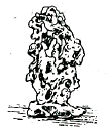
- 첩석봉(疊石峰)
- 태동봉(胎胴峰)
- 설산봉(雪山峰)
- 서운봉(瑞雲峰)
(정답률: 60%)
16. 다음 국립공원에 관한 설명 중 틀린 것은?
- 「국립공원운동」은 영국에서 비롯하였다.
- 미국 최초의 국립공원은 옐로우스톤이다.
- 한국의 제1호 국립공원은「지리산국립공원」이다.
- 국가지정 자연보호자의 필요성을 역설한 사람은 도로우(Thoreau)이다.
(정답률: 75%)
17. 우리나라에서 저술된 문헌이 아닌 것은?
- 한경지략(漢京識略)
- 해동잡록(海東雜錄)
- 궁궐지(宮厥志)
- 장물지(長物志)
(정답률: 79%)
18. 다음 중 Pirro Ligorio가 참여한 설계 작품은?
- Villa d'Este
- Bersailles
- Hampton Court
- Alcazar Garden
(정답률: 80%)
19. 다음 중 찰스 엘리엇(Charles Eliot)에 대한 설명으로 가장 적합한 것은?
- 옴스테드와 함께 센트럴 파크를 설계했다.
- 수도 워싱턴 계획을 수립한 도시계획가이다.
- 최초로 미국 주립공원을 계획했다.
- 최초로 광역공원계통을 수립했다.
(정답률: 79%)
20. 다음 중“정원술에서의 스케치와 힌트”라는 저서를 쓰고 영국 풍경식 조경을 완성시킨 조경가는?
- William Chanvers
- Humphrey Repton
- Lancelot Brown
- Charles Bridgeman
(정답률: 72%)
2과목: 조경계획
21. 이용 후 평가(post occupancy evaluation)를 가장 옳지 못하게 설명하고 있는 것은?
- 설계프로그램을 위한 과학적 자료를 제공한다.
- 과거의 경험을 새로운 프로제트에 반영시키기 위한 방법이다.
- 건물이 시공된 후의 환경적 영향에 대한 예측을 하는 것이다.
- 주로 이용자의 행태에 적합하게 설계 되었는가를 분석한다.
(정답률: 64%)
22. 지리정보시스템(GIS)에 관한 설명으로 적합하지 않은 것은?
- 대상의 형태에 관련된 속성정보를 포함한다.
- 이용 효과면에서 투자 및 조사의 중복을 극대화 할수 있다.
- 대상의 위치와 관련된 지도정보를 포함한다.
- 토지 및 지리에 관련된 제반 공개 자료를 이용자의 의도에 맞게 종합 처리한다.
(정답률: 75%)
23. C.A.Perry가 제안한 근린주구와 관련된 설명으로 옳지 않은 것은?
- 통과교통의 주구내 관통 금지
- 반경 1.6km의 도보권을 일상생활권으로 간주
- 초등학교 1개가 필요한 정도의 주민 유치
- 요구에 적합한 소공원 및 레크레이션 용지의 확보
(정답률: 67%)
24. 지구단위계획구역은 어떤 계획으로 결정하는가?
- 광역도시계획
- 도시·군기본계획
- 도시·군관리계획
- 지구단위계획
(정답률: 53%)
25. 인근 거주자의 이용을 대상으로 하여 유치거리 500m이하로 규모가 1만 제곱미터 이상의 기준에 해당하는 공원은?
- 어린이공원
- 근린생활권근린공원
- 도보권근린공원
- 체육공원
(정답률: 59%)
26. 설문조사를 할 경우 설문지 응답에 걸리는 시간이 너무 길면 지루하게 느껴져 응답의 성의가 떨어진다. 설문응답에 걸리는 시간은 최대 어느 정도가 가장 적절한가?
- 15분 이내
- 30분 이내
- 60분 이내
- 90분 이내
(정답률: 68%)
27. 어느 일단의 대지에 있어서 미기후(micro climate)에 관한 사항 중 틀린 것은?(오류 신고가 접수된 문제입니다. 반드시 정답과 해설을 확인하시기 바랍니다.)
- 수목, 건물 등의 존재 여부에 영향을 받는다.
- 지형, 지표면의 재료 등에 영향을 받는다.
- 지상에서 가까운 공기층에 국지적으로 일어나는 기후상태를 말한다.
- 그 지방의 지역기후(regioal cliamte)와 비슷하다.
(정답률: 70%)
28. 보행자 전용도로(pedestrian mall)의 설치계획 목표 및 기법으로 보기 어려운 것은?
- 도로와 인접한 보행로의 체계는 여러 대상들에 대한 감시를 통한 안전성 확보의 기능을 내포하고 있다.
- 보행자들은 다양한 경관(view)을 즐기며, 다른 사람들을 쳐다보거나 대화를 멈추기도 하므로 스케일에 변화를 주어 흥미를 부여한다.
- 보행자도로의 위치는 통행인의 습관이나 생태에 맞추어 가능한 최단거리로 연결시키도록 한다.
- 주차장에서 입구까지의 보행로는 주보행로와 교차시키고, 주차장은 가급적 인접 설치하여 주차공간의 편의를 고려해 최대한 확보 후 효율적인 용도로 활용한다.
(정답률: 63%)
29. 자연공원의 시설별 계획기준 중 자연탐방로(natureltrail)에 해당되는 내용을 가장 거리가 먼 것은?
- 종단구배는 30˚이하로 할 것
- 연장은 2~3km, 폭은 1.5~2m 정도로 할 것
- 비지터 센터(vistor center)의 전시내용과 관계를 가질 것
- 보도의 구조와 노면은 보행에 편하도록 마감되고 배수가 양호 할 것
(정답률: 71%)
30. 추이대(ecotone)를 가장 적절하게 설명하고 있는 것은?
- 연못생태계 특징 가운데 하나이다.
- 먹이그물(foods web)의 다른 표현으로서 포식자와 먹이의 관계를 설명하는 것이다.
- 서로 다른 식생유형이 만나는 경계지점으로 야생생물이 많이 서식하는 곳이다.
- 자연 생태계의 다양성, 연결성, 안정성, 순환성, 자립성 등을 가지고 농업적으로 생산적인 생태계의 의도적인 설계와 유지관리를 말한다.
(정답률: 77%)
31. 공원자연보존지구에 허용되는 최소한의 공원시설 및 공원사업에 별도의 제한규모가 없는 것은?(단, 자연공원법 시행령 적용)
- 야영장(휴양 및 편익시설)
- 조경시설
- 탐방안내소(공공시설)
- 안전시설
(정답률: 70%)
32. 다음 중 래드번(Redburn) 계획과 가장 거리가 먼 개념은?
- 선형도시
- 보차분리
- 쿨데삭(cul-de-sac)
- 슈퍼블록(super-block)
(정답률: 70%)
33. 다음 중 공장조경의 필요성으로 가장 거리가 먼 것은?
- 산업공해의 완화
- 생산활동의 제고
- 위생·복지시설의 확보
- 자연환경의 창출
(정답률: 52%)
34. 도로의 구조·시설 기준 에 관한 규칙상의 교통섬에 관한 설명으로 옳은 것은?
- 입체도로에서 서로 교차하는 도로를 연결하거나 서로 높이가 다른 도로를 연결하여 주는 도로
- 자동차는 보행자 등의 교통안전을 확보하기 위하여 일정한 폭과 높이 안쪽에는 시설물을 설치하지 못하게 하는 도록 위 공간 확보의 한계
- 자동차의 안전하고 원활한 교통처리나 보행자 도로횡단의 안전을 확보기 위하여 교차로 또는 차도의 분기점 등에 설치하는 시설
- 도로 주변지역의 환경보전을 위하여 길어깨의 바깥쪽에 설치하는 녹지대 등의 시설일 설치되는 지역
(정답률: 69%)
35. 환상방사형 녹지가 많은 계획가들에 의하여 선호되는 이유로 합당하지 않은 것은?
- 인공과 자연의 조화가 우수하다.
- 시민이 쉽게 녹지에 도달할 수 있다.
- 도시의 발전에 질서와 탄력성을 부여한다.
- 어느 도시나 쉽게 조성할 수 있다.
(정답률: 70%)
36. 여가공간 계획에 있어서 이용자 행태 분석의 항목에 포함되지 않는 것은?
- 최대일 이용자수 추정
- 주 이용 대상 공간의 관찰
- 이용만족에 대한 설문조사
- 주요 이용자대상 인터뷰
(정답률: 60%)
37. 토양의 보통 깊이에 따라서 5개의 층(horizon)으로 나누고 있다. 이들 중에서 용탈층(容脫層)으로 불리워지는 것은?
- O층
- A층
- B층
- C층
(정답률: 70%)
38. 조경에 관련되는 학문 영역 중 구체적인 프로젝트를 발전시키는데 있어서, 컴퓨터 그래픽스와 기호표시법 등을 가장 많이 사용하는 것은?
- 자연적 요소
- 사회적요소
- 설계방법론
- 공학적 지식
(정답률: 68%)
39. 오픈스페이스 계획시 이용자가 시간의 흐름에 따라 각각의 체험을 엮어서 총체적인 체험을 얻을 수 있도록 하는 계획개념은?
- 핵화(focalization)
- 결절화(nodalization)
- 관통(penetration)
- 연속(succession)
(정답률: 67%)
40. 회전률(回轉率)에 대한 설명으로 옳지 않은 것은?
- 시간 집중률 또는 동시체재율 이라고도 한다.
- 최대일이용자 수에 대한 최대시 이용자수의 비율이다.
- 동시 수용력(수요량)의 예측을 위한 하나의 지표이다.
- 회전율이 큰 경우에는 체류시간이 짧고, 작은 경우에는 체류시간이 길다.
(정답률: 64%)
3과목: 조경설계
41. 설계도면에서 파선의 사용 용도로 옳은 것은?
- 경계선
- 숨은선
- 상상선
- 치수보조선
(정답률: 76%)
42. 문화재 및 사적지 조경설계에 대한 설명으로 틀린 것은?
- 자연지형의 변화 및 훼손이 없는 범위 내에서 설계하여야 하므로 재료는 사적지 주변지역의 것을 활용하지 않도록 한다.
- 역사 문화유적의 시대적 배경에 부합하도록 역사성에 어울리는 소재, 디자인 요소, 마감방법 등을 고려한다.
- 사적의 복원 및 재현은 역사성에 맞게 하되 주변지역도 역사성에 맞게 식재하고 시설물들이 조화롭게 설계되어야 한다.
- 민속촌의 입지는 풍수의 개념을 고려하여 정하고, 민속시설물과 공간구성은 우리나라 고유 건축의 외부공간 특성을 반영한다.
(정답률: 74%)
43. 공간의 폐쇄성은 수직면의 높이(H)와 관찰자의 거리(D)의 비례에 따라 설명된다. 폐쇄감을 느끼는 한계로 건물전체를 한눈에 볼 수 있는 비례는?
- D/H = 1
- D/H = 2
- D/H = 3
- D/H = 4
(정답률: 50%)
44. 설계도면의 글자 및 치수에 관한 설명으로 틀린 것은?
- 숫자는 아라비아 숫자를 원칙으로 한다.
- 치수는 특별히 명시하지 않는 한, 마무리 치수로 표시한다.
- 글자체는 수직 또는 15°경사의 고딕체로 쓰는 것을 원칙으로 한다.
- 치수는 치수선에 평행하게 도면의 오른쪽에서 왼쪽으로 읽을 수 있도록 기입한다.
(정답률: 75%)
45. 다음 중 도시계획시설인 도로의 사용 및 형태별 구분에 따른 일반도로의 폭은 얼마 이상인가? (단, 도시·군계획시설의 결정· 구조 및 설치기준에 관한 규칙을 적용한다.)
- 2m
- 4m
- 6m
- 8m
(정답률: 48%)
46. 조경설계기준상 <보기>의 설명에 해당하는 체육·위락 시설은?
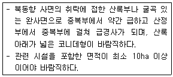
- 골프장
- 경마·승마장
- 스키장
- 빙상장
(정답률: 75%)
47. 우리나라와 중국에서 음양오행설에 따른 방위를 상징하는데 사용되었던 색 중 연결이 틀린 것은?
- 동 - 청색
- 서 - 백색
- 남 - 적색
- 북 - 황색
(정답률: 65%)
48. 조경설계기준상의 「조경포장」 관련 설명으로 틀린 것은?
- 놀이터 포설용 모래는 입경 1~3mm 정도의 입도를 가진 것으로 하고 먼지·점토·불순물 또는 이물질이 없어야 한다.
- 차도용 포장면의 횡단경사는 아스팔트콘크리트 포장 및 시멘트콘크리트포장의 경우 2~4%를 기준으로 한다.
- 자전거도로 포장면의 종단경사는 2.5~ 3.0%를 기준으로 하되, 최대 5%까지 가능하다.
- 보도용 포장면의 종단기울기는 1/12이하가 되도록 하되, 휠체어 이용자를 고려하는 경우에는 1/18이하로 한다.
(정답률: 39%)
49. 제3각법으로 그린 (보기)와 같은 투상도의 입체도로 가장 옳은 것은?
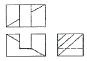
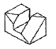
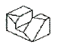
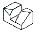
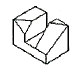
(정답률: 76%)
50. 채도가 높은 노란색이 뚜렷하게 보이기 위한 가장 적절한 주변의 색은?
- 밝은 노란색
- 선명한 초록색
- 연한 빨간색
- 저채도의 파란색
(정답률: 74%)
51. 다음 설명에 알맞은 형태의 지각심리는?
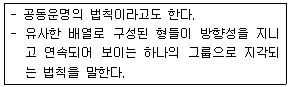
- 근접성
- 연속성
- 대칭성
- 폐쇄성
(정답률: 71%)
52. 제도에서「선」에 관한 설명으로 틀린 것은?
- 한 번 그은 선은 중복해서 긋지 않는다.
- 기본 형태이 선은 되도록 선분에서 교차하여야 한다.
- 평행선의 최소 간격은 이것을 허용하지 않는 규칙이 다른 국제 표준에서 없을 경우 0.7mm 이상이어야 한다.
- 용도에 따른 선의 굵기는 축척과 도면의 크기에 관계 없이 동일하게 한다.
(정답률: 62%)
53. 주차장법 시행규칙상 주차형식별 차로의 너비에 관한 기준으로 옳은 것은? (단, 이륜자동차전용 노외주차장이 아니며, 출입구를 1개로 가정한다.)
- 평행주차 : 4.5m
- 직각주차 : 4.5m
- 45°대향주차 : 5.0m
- 60°대향주차 : 5.0m
(정답률: 49%)
54. 연극무대에서 주인공을 향해 녹색과 빨간색 조명을 각각 다른 방향에서 비추었다. 주인공에게는 어떤 색의 조명으로 비춰질까?
- Cyan
- Grey
- Magenta
- Yellow
(정답률: 64%)
55. 황금분할(ø)에 관한 설명으로 틀린 것은?
- ø는
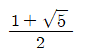
수치에 가깝다. - 1 ÷ ø = 0.8 , ø × ø = 2.5의 관계에 있다.
- 모든 사람들이 가장 좋아하는 비례중 하나이다.
- 이집트의 기제(Gizeh)에 있는 쿠푸(Khufu)왕의 제1피라미드도 황금비를 이룬다.
(정답률: 60%)
56. 다음 중 비스타(vista)의 설명으로 옳은 것은?
- 틀(frame)이 형성된 경관을 말한다.
- 교목의 수관 아래에 형성되는 경관을 말한다.
- 수목 혹은 경사면 등의 주위 경관요소들로 둘러싸여 있는 경관을 말한다.
- 종점 혹은 지배적인 요소로 향하여 모아지는 전망을 말한다.
(정답률: 71%)
57. 조경설계기준상의『조경구조물』에 관한 용어 설명으로 옳은 것은?
- 깊은 기초는 상부구조로부터의 하중을 직접 지반에 전달시키는 형식의 기초로서 기초의 최소폭과 근입 깊이와 의 비가 대체로 1.0 이하인 경우를 말한다.
- 조경시설물은 도시공원 및 녹지 등에 관한 법률의 공원시설 중 상부구조의 비중이 큰 시설물을 말한다.
- 구조내력이란 구조부재를 구성하는 각 재료의 하중 및 외력에 대한 안전성을 확보하기 위하여 부재단면의 각부에 생기는 응력도가 초과하지 아니하도록 정한 한계 응력도를 말한다.
- 고정하중이란 구조물의 각 실별·바닥별 용도에 따라 그 속에 수용 적재되는 사람 물품 등의 중량으로 인한 수직하중을 말한다.
(정답률: 44%)
58. 다음 중 도로와 각 가구를 연결하는 도로로 통과교통이 없어 주거환경의 안전성이 확보되지만 우회도로가 없어 방재 또는 방범 상에 단점이 있는 국지도로의 패턴은?
- 격자형
- T자형
- 루프형
- 쿨데삭형
(정답률: 57%)
59. 1989년 독일의 루르지역에 남겨진 뒤스 부르크-마이더리치 철강 공장이 폐기한 230헥타르의 공장부지의 잔재를 개선하고 버려진 땅의 잠재력을 재발견하여 도시와 지역발전이 될 수 있게 한 도시 공원으로 설계한 작품은?
- Downsview Park
- Parc de la Villette
- IBA Emscher Landscape Park
- Parque do Tejo e Trancao
(정답률: 57%)
60. 리커트 척도(likert scale)는 다음 중 어떤 척도 유형에 속하는가?
- 명목척 (nominal scale)
- 순서척 (ordinal scale)
- 등간척 (inerval scale)
- 비례척 (ratio scale)
(정답률: 66%)
4과목: 조경식재
61. 능수버들과 수양버들에 대한 설명으로 틀린 것은?
- 속명은 Salix 이다.
- 수형은 둘 다 밑으로 처지는 능수형이다.
- 수양버들의 1년생 가지는 적갈색이다.
- 원산지는 능수버들이 중국, 수양버들이 한국이다.
(정답률: 68%)
62. Zelkova serrata 에 관산 설명으로 옳지 않은 것은?
- 잎 가장자리는 톱니모양이다.
- 노란색 또는 붉은색 계열의 단풍이 든다.
- 도시내 적응력이 높으며 녹음이 요구되는 것에 이용한다.
- 천근성으로 번식은 실생보다는 삽목으로 실시하는 것이 효과적이다.
(정답률: 65%)
63. 성숙된 열매의 색이 검정색인 것은?
- Cornus officinalis
- Nandina domestica
- Euonymus alatus
- Ligustrum obtusifolium
(정답률: 50%)
64. 생태계 교란 야생식물에 해당되지 않는 종은?
- 단풍잎돼지풀
- 서양등골나물
- 물참새피
- 미국자리공
(정답률: 40%)
65. 다음 중 줄기나 가지에 가시가 없는 수종은?
- Chaenomeles speciosa
- Pyracantha angustifolia
- Quercus acutissima
- Punica granatum
(정답률: 55%)
66. 생태적 특성에 따른 수종의 예로 옳은 것은?
- 심근성 수종 : 일본잎갈나무, 버드나무
- 내건성이 강한 수종 : 싸리나무, 팥배나무
- 내염성이 강한 수종 : 아그배나무, 함박꽃나무
- 내음성이 강한 수종 : 소나무, 향나무
(정답률: 45%)
67. Sophora Japonica 의 꽃이 개화하는 시기와 꽃색으로 알맞은 것은?
- 3~4월, 연한녹색
- 5~6월, 노란색
- 7~8월, 황백색
- 9~10월, 붉은색
(정답률: 56%)
68. 열매가 열리지 않아 실생 번식이 불가능한 식물은?
- 복자기
- 안개나무
- 불두화
- 풍년화
(정답률: 59%)
69. 나자식물에 속하는 것이 아닌 것은?
- 은행나무
- 비자나무
- 가문비나무
- 단풍나무
(정답률: 45%)
70. 식재의 효과를 설명한 것 중 옳지 않은 것은?
- 식재를 통한 바람조절은 고밀도 식재가 효과적이다.
- 대기 중의 열을 흡수하여 기온강하의 온도 조절효과가 있다.
- 식물의 식재를 통한 외부공간 창출로 시각적인 공간감을 부여할 수 있다.
- 상록활엽수의 식재는 겨울철의 빛의 투과에 의한 복사열 조절에 효과적이다.
(정답률: 55%)
71. 거친 질감을 주는 식재경관을 완화시켜 주기 위한 조치로서 가장 적합한 것은?
- 더 거친 질감을 갖는 수목을 배식한다.
- 산만한 수형을 갖는 수목을 배식한다.
- 작은 잎 크기를 갖는 수목을 배식한다.
- 굵고 큰 가지를 갖는 수목을 배식한다.
(정답률: 69%)
72. 차폐식재를 하려고 한다. 차폐대상건물의 높이는 10.5m이고, 시점과 차폐대상물과의 수평거리는 20m, 시점과 차폐식재와의 수평거리는 10m, 눈의 높이는 1.5m일 때 차폐수목의 높이는 얼마 이상으로 하면 좋은가?
- 6.0m
- 7.0m
- 11.5m
- 19.5m
(정답률: 37%)
73. 다음 중 정형식 식재에 해당되는 것은?
- 비대칭적 균형식재
- 교호식재
- 부등변삼각형식재
- 배경식재
(정답률: 63%)
74. 잔디를 경사면 전체에 피복하여 침식으로부터 보호하기 위해 실시하는 공법은?
- 평때붙이기
- 줄떼붙이기
- 식생반공
- 식생대공
(정답률: 58%)
75. 남부 해안지역에 적합하지 않은 수종은?
- Camellia japonica
- Pinus thunbergii
- Cornus officinalis
- Viburnum awabuki
(정답률: 49%)
76. Aesculus turbinate 에 대한 설명으로 옳지 않은 것은?
- 일본이 원산이다
- 열매는 구형이며 삭과이다.
- 가지 끝에 원추화서로 달린다.
- 잎은 대생이며 장상복엽이다.
(정답률: 36%)
77. 팥배나무의 종명에 해당하는 것은?
- myrsinaefolis
- Alnus
- Sorbus
- alnifolia
(정답률: 45%)
78. 적벽돌 건축물과 보색(complementary color)효과를 나타낼 수 없는 수종은?
- Taxus cuspidata
- Acer palmatum var. sanguineum
- Juniperus chinensis
- Euonymus japonicus
(정답률: 55%)
79. 조경수목의 대기오염 저항력에 대한 설명 중 옳지 않은 것은?
- 바로 이식한 것은 저항력이 약하다.
- 실생묘는 삽목묘 보다 저항력이 약하다.
- 같은 수목이라 하더라도 겨울보다는 봄부터 여름의 생장 최성기에 각종 해의 영향을 받기 쉽다.
- 상록수가 낙엽수에 비해 저항력이 강한 것이 많으나 침엽수 중에는 오염에 약한 것도 있다.
(정답률: 68%)
80. 인동과(科)가 아닌 것은?
- 댕강나무
- 분꽃나무
- 병꽃나무
- 말발도리
(정답률: 48%)
5과목: 조경시공구조학
81. 수의계약에 대한 설명 중 틀린 것은?
- 입찰에 단독으로 참가하는 방법이다.
- 계약의 목적을 비밀로 할 필요가 있을 때 한다.
- 전차(前次) 시공자와 계속 공사 시 적용할 수 있다.
- 계약 상대방과 임의로 가격을 협의하여 계약을 체결한다.
(정답률: 49%)
82. 내응력에 대한 설명으로 틀린 것은?
- 구조재 가 외력에 의해 파괴되지 않으려면 외력보다 큰 응력이 발생해야 한다.
- 구조부재의 어떤 단면내에 생기는 내응력의 합은 그 단면부분의 외응력의 크기와 같다.
- 보와 같은 수평부재에는 휨응력과 압축응력이 발생한다.
- 기둥과 같은 수직부재에는 축응력, 편심응력, 장주응력이 발생한다.
(정답률: 43%)
83. 1:50000 지형도 산정으로부터 계곡까지의 거리가 25mm이고, 산정의 표고가 530m, 계곡의 표고가 130m이다. 이 사면의 경사도는?
- 32%
- 35%
- 42%
- 45%
(정답률: 45%)
84. 천연산과 인공산이 있으며 콘크리트의 워커빌리티를 좋게 하고, 수밀성과 내구성 등을 크게 할 목적으로 사용되는 혼화재료는?
- 완결제
- 포졸란
- 증량제
- 촉진제
(정답률: 62%)
85. 그림과 같은 단순보의 중앙에 집중하중과 모멘트가 작용할 때, 지점 A 에서의 반력을 구하면 몇 kN인가?
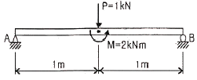
- 1.5(↑)
- 1.5(↓)
- 0.50(↑)
- 0.50(↓)
(정답률: 39%)
86. 다음 [보기]에서 설명하는 시멘트의 종류는?
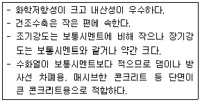
- 실리카 시멘트 (Silica cement)
- 알루미나 시멘트(Alumina cement)
- 저열 포틀랜드 시멘트(low-heat portland cement)
- 중용열 포틀랜드 시멘트(moderate-heat portlandcement)
(정답률: 64%)
87. 화강암의 성질에 대한 설명으로 틀린 것은?
- 절리가 커서 큰 재료를 채취할 수 있다.
- 외관이 아름다워 장식재로 사용할 수 있다.
- 내화성이 크므로 고열을 받는 곳에 적합하다.
- 조직이 균일하고 내구성 및 강도가 크다.
(정답률: 55%)
88. 다음 중 공정의 상태, 관리의 계획을 수립할 때 특성과 요인관계를 일목요연하게 그린 것은?
- Chracteristics diagram
- Pareto diagram
- Histogram
- 관리도
(정답률: 52%)
89. 순환로 조성을 위한 등고선 조정방법에 대한 설명으로 틀린 것은?
- 성토일 경우 높은 등고선에서 조작을 시작한다.
- 절토는 상대적으로 안정된 지반을 얻을 수 있다.
- 등경사 구간의 등고선 간격은 균등하게 유지한다.
- 가장 경제성이 낮은 방법은 성·절토 혼합방법이다.
(정답률: 59%)
90. 구조물의 종류별 콘크리트 타설시 사용되는 굵은 골재의 최대치수(mm)로 가장 적합한 것은? (단, 구조물의 종류는 단면이 큰 경우로 제한한다.)
- 20
- 25
- 40
- 50
(정답률: 59%)
91. GIS에서 다루어지는 지리정보의 특성이 아닌 것은?
- 위치정보를 갖는다.
- 위치정보와 함께 관련 속성정보를 갖는다.
- 시간이 흘러도 변하지 않는 영구성을 갖는다.
- 공간객체 간에 존재하는 공간적 상호관계를 갖는다.
(정답률: 67%)
92. 25m에 대하여 6mm 늘어나 있는 줄자로 정사각형의 지역을 측량한 결과 면적이 60000m2 이었다면 실제 면적(m2)은? (단, 최종값의 소수점 이하는 버림한다.)
- 60028
- 60014
- 59990
- 59985
(정답률: 40%)
93. 콘크리트 타설 후 소요기간까지 경화에 필요한 온도 및 습도조건을 유지하며, 유해한 작용의 영향을 받지 않도록 하는 작업은?
- 진동다짐
- 초기응결
- 습윤양생
- 포졸란 반응
(정답률: 62%)
94. 목재의 크리프에 미치는 영향 중 틀린 것은?
- 고함수율 목재가 저함수율 목재보다 크다.
- 크리프 속도는 온도가 상승하면 더 작아진다.
- 재료에 하중이 가해질 때 온도가 상승하면 크리프이 양과 속도에 영향을 준다.
- 저온과 고온의 주기적인 변화는 일정한 온도를 유지하는 것보다 더 큰 크리프를 발생시킨다.
(정답률: 57%)
95. 도로설계 시 곡선반경을 결정하는데 영향을 주는 요소에 대한 설명으로 틀린 것은?
- 차량 속도의 제곱에 비례한다.
- 설계속도가 커지면 곡선반경이 커진다.
- 횡활동 미끄럼 마찰계수가 크면 곡선반경이 작아진다.
- 곡선부의 편경사 i(tanα)가 클수록 곡선반경이 커진다.
(정답률: 47%)
96. 연못의 설계·시공과 관련된 사항 중 틀린 것은?
- 바닥의 피복토층은 진흙을 이용한다.
- 일반적으로 깊이는 1.5m 이내로 평지나 경사지형으로 조성한다.
- 식생을 도입할 경우에는 식생의 지나친 번식을 제어하기 위해 수중분 식재를 하도록 한다.
- 에어벤트(air vent)는 면적 100m2정도의 소규모 연못방수층 공사에 적용한다.
(정답률: 46%)
97. 다음은 굵은 골재의 비중시험 결과이다. 절대건조 상태의 비중은?
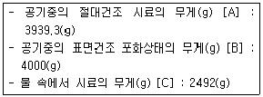
- 2.59
- 2.61
- 2.63
- 2.65
(정답률: 46%)
98. 공사 시행에 필요한 시공재료를 규격화할 때의 효과에 대한 설명으로 틀린 것은?
- 재료의 일반화로 기술향상이 저하된다.
- 대량생산이 가능하며, 가격이 저렴해 진다.
- 산업 합리화를 촉진하는 효과적인 수단이다.
- 시간과 노력의 손실이 적으므로 경제성이 향상된다.
(정답률: 64%)
99. 일반적인 재료의 추정 단위중량을 비교하여 중량이 가장 큰 것은?
- 호박돌
- 자연 상태의 안산암
- 건조 상태의 자갈
- 자연 상태의 자갈 섞인 모래
(정답률: 46%)
100. 건설공사 표준품셈상의 토질 및 암의 분류 중『경질토사』에 대한 설명으로 옳은 것은?
- 일부는 곡괭이를 사용할 수 있으나 암질(岩質)이 부식되고 균열이 1~10cm로서 굴착 또는 절취에는 약간의 화약을 사용해야 할 암질
- 자갈질 흙 또는 견고한 실트, 점토 및 이들의 혼합물로서 곡괭이를 사용하여 파낼 수 있는 단단한 토질
- 견고한 모래질 흙이나 점토로서 괭이나 곡괭이를 사용할 정도의 토질 (체중을 이용하여 2~3회 동작을 요할 정도)
- 보통 상태의 실트 및 점토 모래질 흙 및 이들의 혼합물로서 삽이나 괭이를 사용할 정도의 토질(삽 작업을 하기 위하여 상체를 약가 구부릴 정도)
(정답률: 50%)
6과목: 조경관리론
101. 다음 설명하는 양분은?
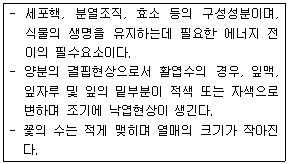
- 질소(N)
- 인(P)
- 칼륨(K)
- 칼슘(Ca)
(정답률: 51%)
102. 재해의 발생형태 중 재해자 자신의 움직임·동작으로 인하여 기인물에 부딪히거나, 물체가 고정부를 이탈하지 않은 상태로 움직임 등에 의하여 발생한 경우를 무엇이라 하는가?
- 비래
- 전도
- 충돌
- 협착
(정답률: 61%)
103. 다음 중 우리나라에서 볼 수 있는 외래잡초에 해당 하지 않는 것은? (문제 오류로 실제 시험에서는 모두 정답처리 되었습니다. 여기서는 1번을 누르면 정답 처리 됩니다.)
- 갯드렁새
- 돼지풀
- 큰참새피
- 개비름
(정답률: 69%)
104. 토양의 완충능력(butter action)에 기여도가 가장 큰 것은?
- 부식산
- 아세트산
- 탄산
- 인산
(정답률: 46%)
1⑤. 작물 재배시 질소 성분량 11㎏이 필요한 경우, 요소(N45%, 흡수율40%)로 질소질 비료를 충당할 때 실제 요소의 필요량(㎏)은 약 얼마인가?
- 24.4
- 36.4
- 61.1
- 71.1
(정답률: 48%)
106. 다음 중 유희시설과 관련된 설명으로 가장 부적합 한 것은?
- 망루, 놀이집 등의 공간은 독립폐쇄형으로 한다.
- 기초콘크리트, 유희시설의 면모서리, 구석모서리는 둥글게 처리하거나 모따기를 한다.
- 그네, 회전무대 등 충돌의 위험이 많은 시설은 보행동선과 놀이동선이 상충 또는 가로지르지 않도록 배치한다.
- 시설조립에 사용되는 긴결재는 규정된 도구로만 해체가 가능하도록 하고 인력에 의해 풀어지지 않아야 한다.
(정답률: 66%)
107. 광장이나 녹지의 적절한 유지 관리를 위한 배수시설에 대한 설명으로 옳지 않은 것은?
- 일반적으로 배수시설에는 표면에 노출하는 개거식과 지하에 매설하는 암거식 두 가지로 분류한다.
- 도로와 광장의 배수는 물매를 붙여 측구를 통해 맨홀에 모이게 한다.
- 콘크리트 측구는 L, V, 사다리꼴형 등을 적절하게 이용하게 한다.
- 지하수위가 높은 저습지는 배수시설이 필요하지 않다.
(정답률: 69%)
108. 시멘트 가설창고의 구조, 설치 및 관리방법으로 틀린 것은?
- 쌓기단수는 13포 이하로 정돈· 보관하여 쌓는다.
- 창고 바닥은 지반에서 30cm 이상 띄어 설치한다.
- 가설창고 설치시 주위에 배수도랑을 두고 누수를 방지한다.
- 채광창을 설치하고 가능한 한 개구부를 다양하게 만들어 시멘트 유해가스의 통기에 유의한다.
(정답률: 59%)
109. 다음 중 레크리에이션 관리체계의 기본요소가 아닌 것은?
- 자원(resource)
- 이용자(visitor)
- 서비스(service)
- 관리(managment)
(정답률: 42%)
110. 네트워크 공정표에 관한 설명 중 옳지 않은 것은?
- 작성 및 검사가 용이하다.
- 공사전체의 파악을 용이하게 할 수 있다.
- 크리티컬 패스(critical path)는 전체공기를 규제하는 작업과정이다.
- 계획단계에서 공정상의 문제점이 명확하게 되어 작업전에 적절히 수정할 수 있다.
(정답률: 54%)
111. 암석이 토양으로 변하는 데에는 풍화작용(weathering process)에 의하는데 다음 설명에 해당하는 화학적 풍화작용의 유형은?
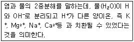
- 탄산염화작용
- 가수분해작용
- 산화반응
- 수화작용
(정답률: 56%)
112. 건설공사시에 안전관리자를 선임하여 현장에 상주시켜야하는 기준이 아닌 것은? (단, 조경공사표준시방서와 산업안전보건법 내용을 적 용한다.)
- 굴착면의 높이가 1.5m 되는 지반 굴착
- 3톤의 기중기를 사용하는 작업
- 높이가 2m이상의 콘크리트 공작물의 해체
- 밀폐된 장소에서 행하는 용접작업
(정답률: 56%)
113. 토양의 딱딱한 견밀화는 조경에 심각한 문제를 가져온다. 수목이 이미 자라고 있는 장소의 처방으로 가장부적합한 것은?
- 산도교정(soil acidity)
- 천공법(vertical mulching)
- 멀칭(mulching)
- 방사상 도량(radial trench)
(정답률: 50%)
114. 용성인비에 대한 설명 중 틀린 것은?
- 황산근(黃酸根)이 없는 비료이다.
- 토양의 산성을 중화시킨다.
- Mg, Mn 결핍토양에 특히 효과가 있다.
- 연용(連用)할수록 지력(地力)을 낮추게 됨으로 유의한다.
(정답률: 35%)
115. 수목에 발생하는 각종 해충의 방제와 관련한 설명중 옳지 않은 것은?
- 솔나방의 구제는 3월 상순~4월 하순까지 번데기를 채취해 소각한다.
- 천막벌레나방(텐트나방)이 발생한 느티나무는 유충 발생초기인 4월 중하순에 트랄로메트린 유제(1.3%) 2000배액을 수관 살포한다.
- 벚나무응애는 여름철 건조한 날씨에 잎이 황변한 것이나, 흡즙 흔적이 있는 잎을 채취하여 소각한다.
- 향나무(측백나무)하늘소는 기생성 천적인 좀벌류, 맵시벌류, 기생파리류 등을 보호한다.
(정답률: 32%)
116. 정상공사기간이 20일이고, 공사비가 100만원인 공사를 특급공사로 할 때, 공사기간이 10일, 공사비가 200만원이 든다고 한다면 이 공사의 1일 공기 단축시 필요한 비용구배로 가장 적당한 것은?
- 10만원/일
- 20만원/일
- 25만원/일
- 50만원/일
(정답률: 50%)
117. 생물적 요인에 의한 식물병 중 그 발생 원인이 다른 것은?(오류 신고가 접수된 문제입니다. 반드시 정답과 해설을 확인하시기 바랍니다.)
- 느릅나무 얼룩반점병
- 삼나무 붉은마름병
- 오동나무 탄저병
- 소나무 잎마름병
(정답률: 23%)
118. 공사원가 구성항목에 포함되는 일반관리비의 계상 설명으로 맞는 것은?
- 관급자재에 대한 관리비 계상은 일반관리비 요율에 준하여 계상한다.
- 가설사무소, 창고, 숙소, 화장실 설치비용을 포함해서 계상한다.
- 현장사무소의 유지관리를 위하여 사용되는 비용이다.
- 순공사비 합계액의 6%를 초과하여 계상할 수 없다.
(정답률: 48%)
119. 주로 토양이나 풍화토를 된 곳으로 붕괴 우려가 적은 비탈면 표층부의 안정을 도모할 때 적용되는 공법은?
- 구조물에 의한 보호공
- 식생공
- 낙석방지공
- 배수공
(정답률: 59%)
120. 곤충의 순화계에 대한 설명으로 옳지 않은 것은?
- 소화관의 등쪽에 위치하며 1개의 단순한 관 모양이다.
- 혈액은 혈장과 혈구로 구성되어 있다.
- 곤충의 등관(dorsal vessel )의 앞쪽의 가느다란 부분이 대동맥(aorta)이라 한다.
- 곤충은 폐쇄순환계이다.
(정답률: 60%)